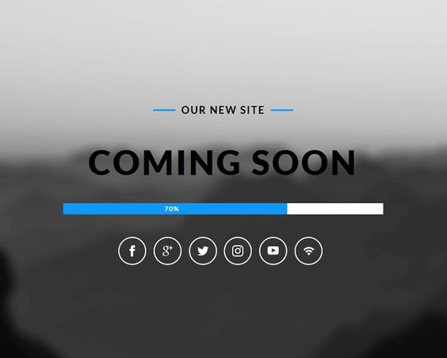
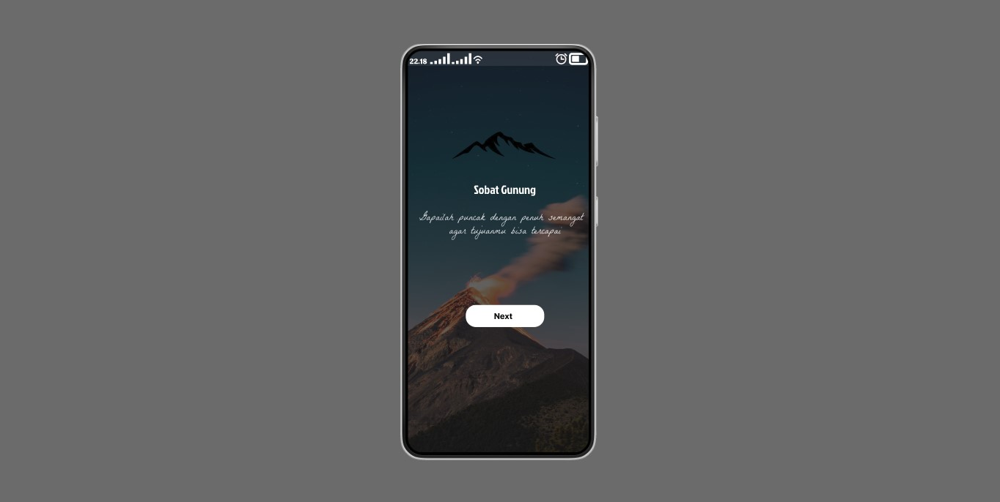

Services
Specialized In
UI/UX Design
Dalam dunia desain antarmuka pengguna (UI) dan pengalaman pengguna (UX), saya bersemangat untuk terus belajar dan berkembang di bidang ini. Saya telah mempelajari dasar-dasar penelitian pengguna, wireframing, dan prototyping, serta mulai mengeksplorasi desain visual yang responsif.
Web Development
Dalam dunia pengembangan web, saya bersemangat untuk terus belajar dan mengasah keterampilan saya dalam membangun situs web yang fungsional dan responsif. Saya telah mempelajari dasar-dasar HTML, CSS, dan JavaScript, serta mulai mengeksplorasi framework dan teknologi terbaru.
My Works
Featured Portfolios
Tujuan utama pembuatan website ini adalah untuk memperkenalkan keindahan alam, budaya, dan sejarah Pulau Sulawesi kepada para traveler dari seluruh dunia. Dengan menyediakan informasi yang akurat dan menarik tentang berbagai destinasi wisata di Sulawesi, kami berharap dapat meningkatkan jumlah wisatawan yang berkunjung ke pulau ini. Hal ini tidak hanya akan membantu mempromosikan Sulawesi sebagai tujuan wisata yang menakjubkan, tetapi juga mendukung perekonomian lokal dan kesejahteraan masyarakat setempat.

Tujuan utama pembuatan website komersial ini adalah untuk menyediakan platform yang efisien dan mudah diakses bagi pelanggan untuk menemukan dan membeli produk atau layanan yang kami tawarkan. Dengan kehadiran online yang kuat, kami berharap dapat memperluas jangkauan pasar kami, menarik pelanggan baru, dan meningkatkan penjualan secara signifikan. Website ini dirancang untuk memberikan pengalaman berbelanja yang nyaman dan aman, dengan fitur-fitur seperti pencarian produk yang mudah, proses checkout yang cepat, dan berbagai metode pembayaran yang aman.

Tujuan saya membuat desain ini untuk menambah skill saya di Figma dan ingin mengetahui tools yang ada di Figma. Dengan bekerja pada proyek ini, saya bertujuan untuk memperdalam pemahaman saya tentang prinsip-prinsip desain antarmuka pengguna (UI) dan pengalaman pengguna (UX). Saya ingin mengembangkan kemampuan saya dalam menciptakan tata letak yang intuitif, estetis, dan fungsional yang dapat memberikan pengalaman terbaik bagi pengguna aplikasi.
Learning Path
Skills & Education
Makassar Public University
computer techique major
2022-2024
Dalam perjalanan saya sebagai pengembang web dan desainer, saya telah mengasah berbagai keterampilan teknis dan kreatif yang memungkinkan saya untuk menciptakan solusi digital yang efektif dan estetis. Di bawah ini adalah daftar keahlian yang telah saya kembangkan, yang mencerminkan dedikasi saya untuk terus belajar dan berinovasi dalam bidang ini.